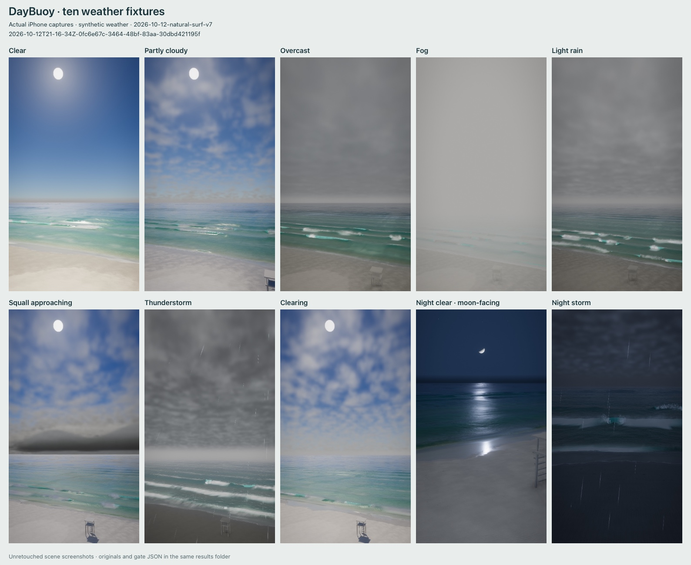
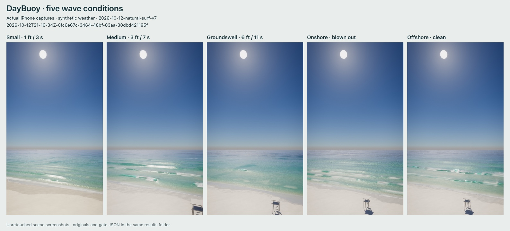

DAYBUOY · RELEASE REVIEW
Open the beachRun the 120-second iPhone gateMac → TestFlight walkthrough
v7 is the accepted baseline: 40.1 average FPS, minimum 32, zero seconds below 30. v8 has not yet been phone-verified. New galleries, 12 live location screenshots and the scrub/paywall recording are generated by the gate after timing; they are not represented by the v7 images below. This environment cannot run the browser/device capture.
| Hidden profile | Sea-facing bearing | Live sources checked |
|---|---|---|
| Inlet Beach, FL | 201° (v7 approved) | NWS weather; marine; NOAA tides; NWS surf |
| Cocoa Beach, FL | 92.1° · east | NWS weather; marine; NOAA tides; NWS surf |
| Mission Beach, San Diego | 268.02° · west | NWS weather; marine; NOAA tides; NWS surf |
Bearings/colors/bar profiles are est. Coastline source: OpenStreetMap contributors, ODbL. Inlet retains its accepted 201° normal and materials rather than shifting its approved framing to the generator's 204.51° estimate. Cocoa and San Diego use measured coastline-segment orientation, not a Gulf assumption. The deployed API returned schema-3 live responses for all three profiles, with the shared cache ready and all weather/marine/tide/surf feeds fulfilled. Deployed check metadata. Live data checks are not screenshot evidence.
Live fields: hourly air, feels-like estimate, cloud total, humidity, rain/probability, wind/gust/direction (NWS fallback); Open-Meteo wave/partition heights, periods and directions where supplied, current, sea level and SST; NOAA tide predictions and high/low events; fresh available NDBC observations; matching NWS surf products. Wave peak period and some tertiary partitions are unavailable in tested responses. UV remains unavailable in the current NWS fallback. Nulls stay unavailable, not fabricated zero readings.
Render budgets retained: DPR 1.1–1.6; FFT reuse at 40 transforms/s; 48 crest samples, 1.2 m spacing, 12 lip vertices; bounded foam; 512×128 complete cloud-atlas crossfade. Tidewater 4811ba48 remains pinned. MIT notices for Tidewater and Takram remain in Credits.


Pending a physical-iPhone run. The gate first measures the heaviest night storm for 120 seconds, then saves ten weather fixtures, five wave cases, a full-app day scrub with paywall and twelve live location views (sunrise/noon/sunset/night). No capture/encoding overlaps timing. The video is a live WebGPU + actual DOM composite, not an OS screen recording.
Evidence folder. Only a report carrying revision 2026-10-12-location-plus-v8 counts as new evidence. Capture errors are retained even if FPS passes.